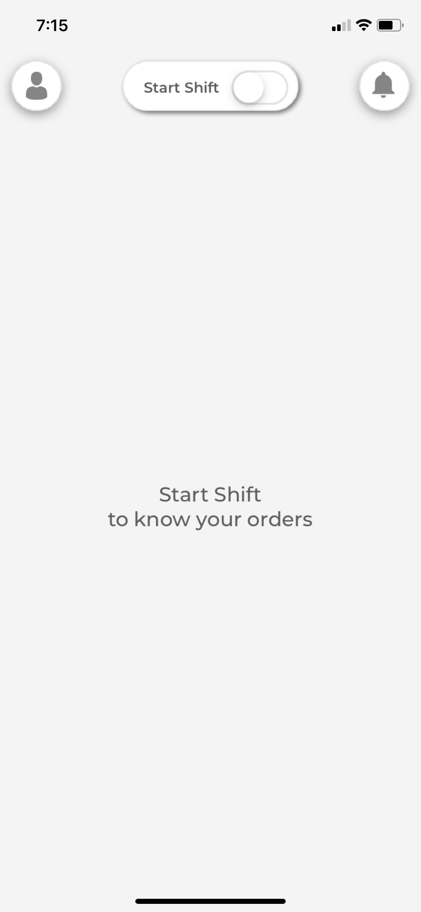
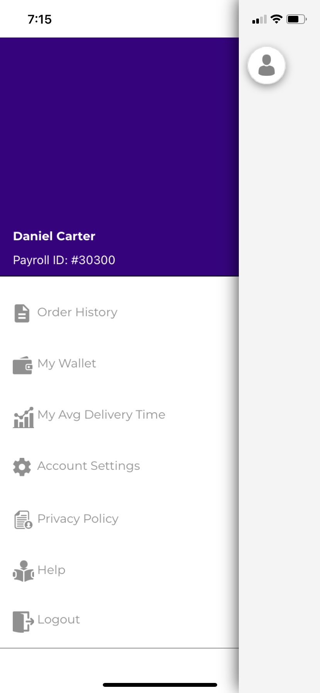
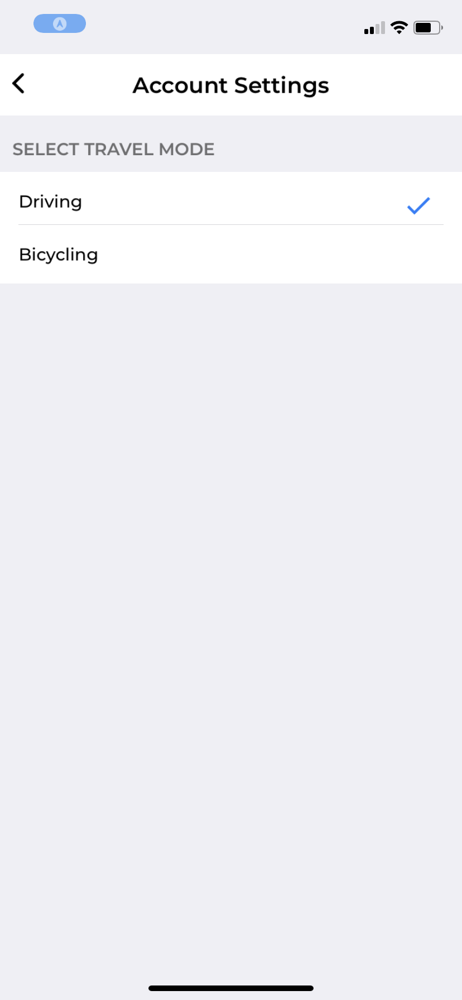
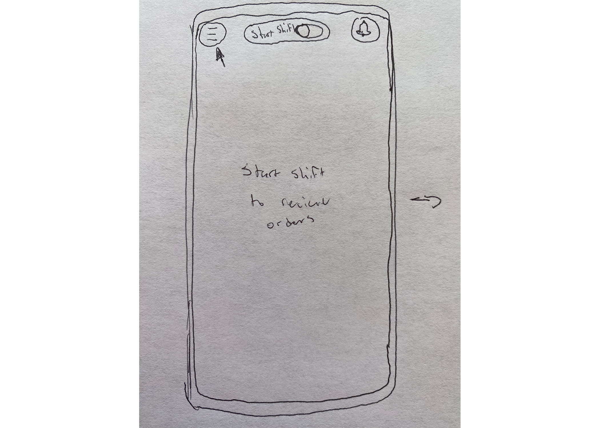
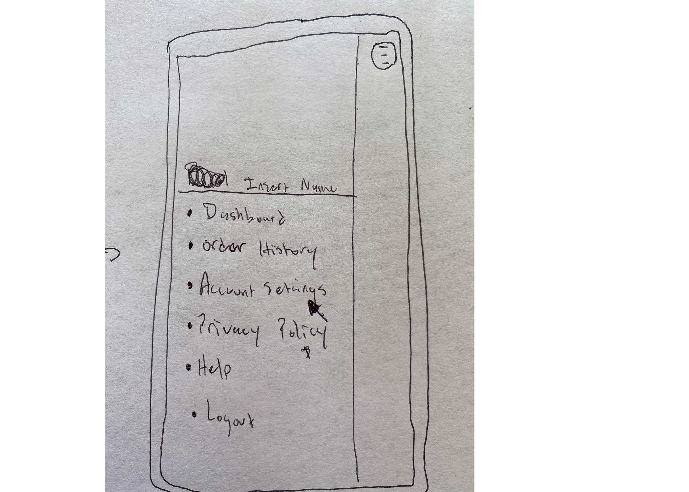
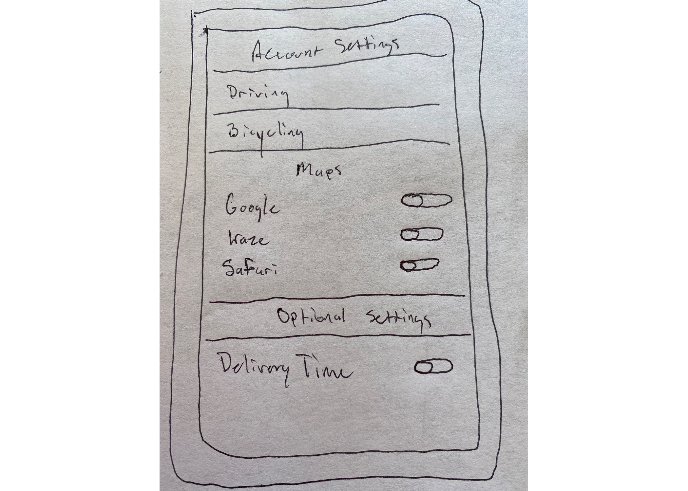

App Flow Redesign Case Study: Insomnia Cookies Delivery App
Overview
As the global pandemic continues to make itself known in the daily lives of people across the world, it has been apparent that the former ways of achieving simple tasks, like getting groceries or buying food, will no longer be deemed safe. The rise in deliveries was foreseeable, and the efficiency of how these deliveries are made is quite important to the drivers and companies they work under.
In this case study we’ll be looking closely at the Insomnia Cookies driver app, and how we can improve on the foundations that have already been laid.
Design Question:
How might we increase the efficiency for delivery drivers using Insomnia’s mobile app while on the road?
User Goals:
Visual list of deliveries
Keeping track of delivery speed time
Mapping directions from point A to point B
Showing overall tip amount
Having quick access to delivery settings
User Research
I asked five delivery drivers at Insomnia to complete a survey. This survey had questions to determine the main issues they experience with the app, the features they use the most and the accessibility of it all while driving on the road. Now I determined there were three major concerns with the app. Number one: the app only lets users connect Google Maps directly to their deliveries, and the problem there is that Google Maps isn’t nearly as efficient as others. The app gives no option to switch between using different apps, and as you can see, 80% of the drivers at this Insomnia Cookies use something other than Google Maps.
The other major features that drivers were concerned about were the average delivery time and the account settings. It was a tie with 40% of drivers believed both these components of the app needed improvement. My solution is to combine these issues together to provide one answer to the problems. I'll dive more into that once we get to the Ideation Process.
Question 1
Question 2
Pain Points
Now as you can see, the app starts with the dashboard menu when drivers open it up. If you look at the top right, you’ll see an image of an avatar. That image might be misleading, and could be replaced with three lines representing the settings option. But, let’s focus on the main issues the data revealed. Once we select the avatar a pop up menu appears on the left. That is where we can locate the average delivery time and the account settings. Once drivers click delivery settings, which is represented in the third image, the lack of helpful options is painstakingly clear.
If drivers were to hit the average delivery time instead, they would see an inaccurate accounting of their average delivery times. However, the system in store tracks the accurate time without using the app. That makes this feature more of a worry and adds unnecessary clutter.



Ideation Process and Wireframes
So, as I thought on how to fix these issues highlighted by the drivers, I focused on fixing them with simplicity. To fix all problems with one centralized idea. That idea revolved around the lack of options in the account settings. So I added helpful content in this section as I built my wireframes.
I decided to add a map option to the account settings, which would let drivers switch between maps they prefer instead of only using Google Maps. I also added an option that would turn off unwanted features. Like the inaccurate delivery times. I didn't like the idea of just hiding the feature at first, but the delivery time's issue is structural, and would need to be fixed by code. So, my solution is to get rid of the clutter drivers don't need. As I was thinking and drawing, I leaned on these solutions to fix the lack of account setting options, map availability and the worrysome delivery times.



Rationale and Visual Mockups
My first decision was to change the avatar image as it could be misleading to drivers. I replaced it with the image of three lines so drivers would know where the main settings were located. The overall design of the app is simple, which I think is important, so I kept it mostly the same. Once drivers click the three lines they will be shown the new section of content at the bottom left. I removed the "My Wallet" and "Delivery Time" options to the account settings to get rid of the clutter. I also added more map options for drivers to sync to. These few decisions simplified the content on the app, made use of the account settings and gave an option to get rid of the content that doesn't properly work.